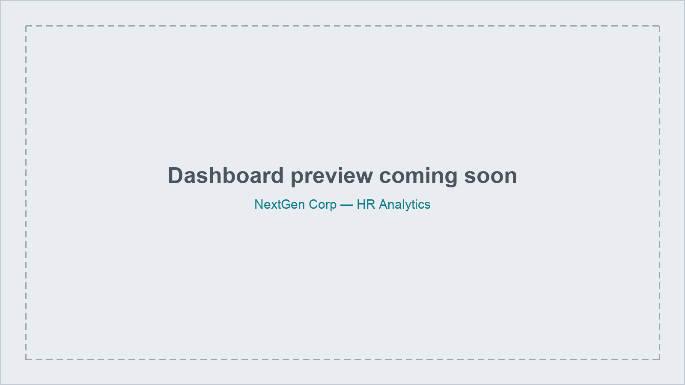

Background
NextGen Corp is a growing tech company developing solutions across software and hardware. Despite a reputation for attracting skilled talent, it has recently faced rising employee turnover, uneven performance across departments, and salary disparities. This analysis uses organisational data to help HR make informed decisions that strengthen retention, improve performance management, and support fair compensation — covering retention and turnover trends, cross-department performance, and the relationship between salary and performance.

Retention & Turnover
Sales & Marketing hold the longest-serving employees, several with 9–10 years of tenure, pointing to stable leadership and a positive workplace culture in customer-facing roles. Turnover rates vary sharply by department: Engineering sits at 150% (a small team of 6 active staff against 9 departures, which mathematically inflates the rate but still signals real instability), Marketing at 64.29%, HR at 54.55%, and Sales at a comparatively healthy 13.79%. Reasons for leaving differ by department too — retirement is concentrated in Engineering, career-growth limitations drive exits in Engineering and HR, external job competition is the main issue in Marketing, and personal reasons contribute across the board.
Performance
Only 9 employees reached the top performance score of 5.0, while 45 scored below 3.5 — a group at risk of disengagement tied to workload stress, insufficient training, or unclear leadership. Grace Wilson, David Moore and Eve Davis (each at 3.0) sit at the highest risk of leaving based on sustained low productivity and warrant performance reviews; Jane Brown (3.4) is closest to recovery but still needs monitoring. At the department level, Sales has both the most high performers and the most low performers, the widest performance spread of any team, while Marketing and HR show many low performers with very few top ones, and Engineering shows consistently low performance overall, suggesting a support or process bottleneck rather than a talent problem.
Salary & Compensation
Total salary expense is £4.85M, the company's largest financial commitment. Pay is fairly balanced across roles — Sales Representatives earn the most on average (£84,285.71) and Marketing Specialists the least (£77,857.14), a gap of under £7,000. 26 employees earn above £80,000, reflecting a sizeable senior or skilled cohort.
Salary vs. performance correlation
The relationship between pay and performance is inconsistent across departments. HR and Sales show a positive correlation — competitive pay lining up with strong performance. Marketing shows an inverse correlation: the lowest average salary (£77,857.14) alongside the highest average performance (4.17), suggesting non-financial motivators and effective leadership are doing the work instead. Engineering shows a negative correlation — competitive pay (£80,000) but the lowest performance score (4.01), meaning higher pay isn't translating into better outcomes there, and other factors are likely suppressing performance.
Recommendations
- Strengthen support for Engineering: run a skills and training needs analysis, review workload and project distribution, and introduce targeted coaching or mentorship to close the performance gap.
- Review pay equity for Marketing: assess whether roles are under-compensated relative to their contribution, and consider performance-based incentives.
- Introduce retention programmes for high performers company-wide: recognition programmes, clearer promotion criteria, and expanded career-growth pathways.
- Address performance risk early: start intervention conversations and performance improvement plans for employees scoring below 3.5, with mentors or training resources attached.
- Track turnover reasons quarterly by department and act on exit feedback to improve job design, leadership and career progression.
- Build clearer internal mobility pathways — certifications, training and development funding — since career growth is a leading reason for leaving in HR and Engineering.